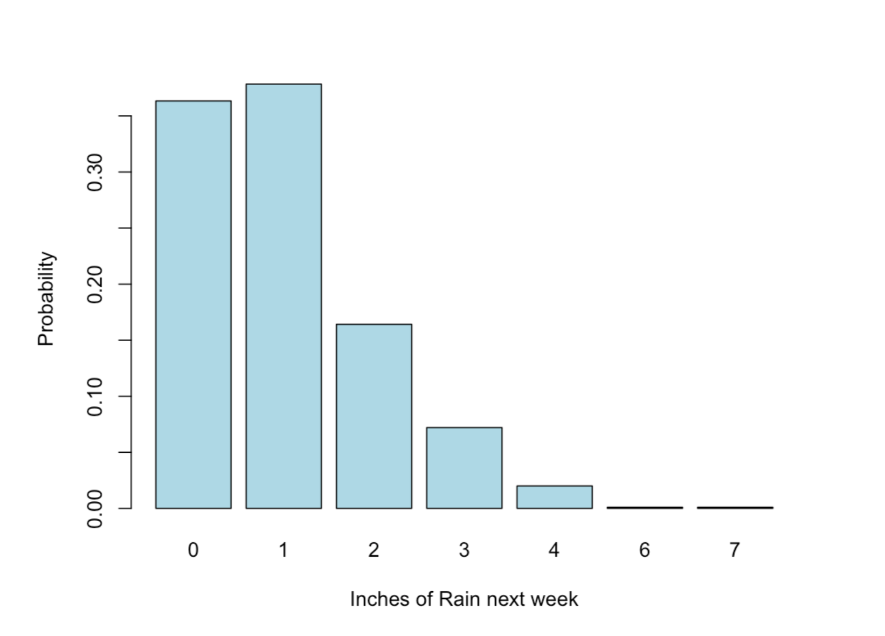
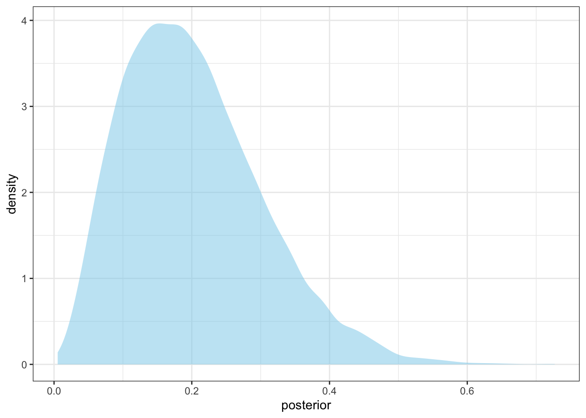

library(tidyverse)
library(mosaic)
library(ggformula)
library(ggjoy)
library(broom)
library(posterior)
library(bayesplot)
library(bayestestR)
theme_set(theme_bw())
set.seed(123456)DataCamp: Fundamentals of BDA in R
What is Bayesian data analysis?
This chapter will introduce you to Bayesian data analysis and give you a feel for how it works.
Bayesian/probabilistic inference in a nutshell
A method for figuring out unobservable quantities given known facts that uses probability to describe the uncertainty over what the values of the unknown quantities could be
Bayesian data analysis
The use of Bayesian inference to learn (parameter estimates, future data, etc) from data
It can be used for hypothesis testing, linear regression, etc.
It is very flexible and allows the data analyst to construct problem-specific models
Probability
A number between 0 and 1
A statement about certainty/uncertainty
1 is complete certainty something is the case
0 is complete certainty something is NOT the case
Not only about yes/no events (see continuous probability distribution below)

The role of probability distributions in BDA is to represent uncertainty, and the role of Bayesian inference is to update probability distributions to reflect what has been learned from data
A Bayesian model for the proportion of success
The function prop_model implements a Bayesian model that assumes that:
The
datais a vector of successes and failures represented by1s and0sThere is an unknown underlying proportion of success
Prior to being updated with data any underlying proportion of success is equally likely
The result is a probability distribution that represents what the model knows about the underlying proportion of success
prop_model <- function (data = c(), prior_prop = c(1, 1), n_draws = 10000,
show_plot = TRUE)
{
data <- as.logical(data)
proportion_success <- c(0, seq(0, 1, length.out = 100), 1)
data_indices <- round(seq(0, length(data), length.out = min(length(data) +
1, 20)))
post_curves <- map_dfr(data_indices, function(i) {
value <- ifelse(i == 0, "Prior", ifelse(data[i], "Success",
"Failure"))
label <- paste0("n=", i)
probability <- dbeta(proportion_success, prior_prop[1] +
sum(data[seq_len(i)]), prior_prop[2] + sum(!data[seq_len(i)]))
probability <- probability/max(probability)
data_frame(value, label, proportion_success, probability)
})
post_curves$label <- fct_rev(factor(post_curves$label, levels = paste0("n=",
data_indices)))
post_curves$value <- factor(post_curves$value, levels = c("Prior",
"Success", "Failure"))
p <- ggplot(post_curves, aes(x = proportion_success, y = label,
height = probability, fill = value)) + geom_joy(stat = "identity",
color = "white", alpha = 0.8, panel_scaling = TRUE, linewidth = 1) +
scale_y_discrete("", expand = c(0.01, 0)) + scale_x_continuous("Underlying proportion of success") +
scale_fill_manual(values = hcl(120 * 2:0 + 15, 100, 65),
name = "", drop = FALSE, labels = c("Prior ", "Success ",
"Failure ")) + theme_light(base_size = 18) +
theme(legend.position = "top")
if (show_plot) {
print(p)
}
invisible(rbeta(n_draws, prior_prop[1] + sum(data), prior_prop[2] +
sum(!data)))
}data <- c()
prop_model(data)Warning: `data_frame()` was deprecated in tibble 1.1.0.
ℹ Please use `tibble()` instead.data <- c(0)
prop_model(data)
data <- c(0, 1)
prop_model(data)
data <- c(0, 1, 0, 0, 0)
prop_model(data)
data <- c(0, 1, 0, 0, 0, 1)
prop_model(data)
Zombie cure

Let’s say the zombie apocalypse is upon us and we have come up with a new experimental drug to cure zombieism. We have no clue how effective it’s going to be, but when we gave it to 13 zombies two of them turned human again.
QOI = proportion of zombies cured by drug
The model implemented in prop_model makes more sense here than in the fair coin tossing experiment as we have no clue how good the drug is. The final probability distribution (with x = 2 successes/zombie cured out of n = 13 zombies who were given the drug) represents what the model now knows about the underlying proportion of cured zombies.
What proportion of zombies would we expect to turn human if we administered this new drug to the whole zombie population?
Between 5% to 40%.
data = c(1, 0, 0, 1, 0, 0, 0, 0, 0, 0, 0, 0, 0)
prop_model(data)
Priors and posteriors
A prior is a probability distribution that represents what the model knows before seeing the data (the blue distribution above)
A posterior is a probability distribution that represents what the model knows after having seen the data (the last red distribution above)
A probability distribution can be represented by a plot, a mathematical function (if it exists), or a vector of samples where a value occurs proportionally often to how probable it is.

# number of dice
num_dice <- 5
# number of sides on each die
num_sides <- 6
# simulate rolling five dice and counting the number of 6's
number_of_sixes <- replicate(10000, sum(sample(1:num_sides, num_dice, replace = TRUE) == 6))
number_of_sixes[1:20] [1] 2 0 2 1 2 1 1 0 1 0 1 0 1 0 0 1 1 0 1 1gf_bar(~ number_of_sixes)
Summarizing and reporting the results of the zombie drug experiment
In addition to showing the plot, prop_model also returns a large (N = 10,000) random sample from the posterior over the underlying proportion of success.
data = c(1, 0, 0, 1, 0, 0, 0, 0, 0, 0, 0, 0, 0)
# extract and explore the posterior
posterior = prop_model(data, show_plot = FALSE)
posterior[1:20] [1] 0.1652 0.4222 0.2974 0.2881 0.1083 0.1598 0.1613 0.3448 0.1255 0.2367
[11] 0.2823 0.1645 0.1608 0.4058 0.3985 0.2326 0.3561 0.2758 0.3165 0.1754The point of working with samples from a probability distribution is that it makes it easy to calculate new quantities of interest.
- Take a look at the distribution of all the samples in
posteriorby plotting it as a histogram or density plot.
gf_density(~ posterior)
A point estimate is a single number used to summarize what’s known about a parameter of interest. It can be seen as a “best guess” of the value of the parameter. A commonly used point estimate is the median of the posterior. It’s the midpoint of the distribution, and it’s equally probable for the parameter value to be larger than the median as it is to be smaller than it.
mean(posterior)[1] 0.2016median(posterior)[1] 0.1889So, a best guess is that the drug would cure around 18% of all zombies. Another common summary is to report an interval that includes the parameter of interest with a certain probability. This is called a credible interval (CI). With a posterior represented as a vector of samples you can calculate a CI using the quantile() function.
quantile() takes the vector of samples as its first argument and the second argument is a vector defining how much probability should be left below and above the CI. For example, the vector c(0.05, 0.95) would yield a 90% CI and c(0.25, 0.75) would yield a 50% CI.
- Calculate a 90% credible interval of
posteriorusingquantile().
quantile(posterior, c(0.05, 0.95)) 5% 95%
0.0617 0.3871 favstats(posterior) min Q1 median Q3 max mean sd n missing
0.005271 0.1262 0.1889 0.2629 0.727 0.2016 0.1004 10000 0hdi(posterior, ci = .89)89% HDI: [0.05, 0.35]According to the credible interval, there is a 90% probability that the proportion of zombies the drug would cure is between 6% and 38%. (Here we have to be careful to remember that the percentage of cured zombies and the percentage of probability are two different things.)
Now, there is a rival zombie laboratory that is also working on a drug. They claim that they are certain that their drug cures 7% of the zombies it’s administered to. Can we calculate how probable it is that our drug is better? Yes, we can! But it’s a two stage process:
- Use
sumto count how many samples inposteriorthat are larger than 7%
sum(posterior > 0.07)[1] 9309To turn this count into a probability we now need to normalize it, that is, divide it by the total number of samples in posterior.
- Divide the result of
sumby the number of samples inposterior
sum(posterior > 0.07)/length(posterior)[1] 0.9309or, in one step:
mean(posterior > 0.07)[1] 0.9309Given the data of two cured and 11 relapsed zombies, and using the Bayesian model described before, there is a 90% probability that our drug cures between 6% and 39% of treated zombies. Further, there is 93% probability that our drug cures zombies at a higher rate than current state of the art drugs.
Sounds like science to me!
How does Bayesian inference work?
Bayesian inference requires three ingredients:
Data
Generative model
Priors

Generative model of the zombie drug experiment
# parameters
prop_success <- 0.15
n_zombies <- 13
# simulate data
data <- map_int(1:n_zombies, \(x) runif(1, min = 0, max = 1) < prop_success)
data [1] 0 0 0 0 0 1 0 0 0 0 0 0 0# count zombie cured
data <- sum(data)
data[1] 1It turns out that this generative model already has a name. It’s called the binomial process or the binomial distribution. In R you can use the rbinom function to simulate data from a binomial distribution. The rbinom function takes three arguments:
nThe number of times you want to run the generative modelsizeThe number of trials. (For example, the number of zombies you’re giving the drug.)probThe underlying proportion of success as a number between0.0and1.0.
A nice thing with rbinom is that it makes it easy to rerun the generative model many times.
data = rbinom(n = 1000, size = n_zombies, prob = prop_success)
data[1:20] [1] 4 2 4 1 3 2 1 2 1 2 3 1 1 0 5 2 2 4 3 3It’s actually the case that all probability distributions, like the normal distribution or the Poisson distribution, can be seen as small generative models, and there are many more that are implemented in R.
Using a generative model
With a generative model, we can plugin fixed parameter values and it will generate simulated data. This is useful if we know the parameter values, and we want to predict what future unknown data might be.
For example, say we are completely sure that our drug cures 7% of all zombies, and we want to know how many we’ll likely cure when we give the drug to the 100 zombies we have in our zombie pit.

cured_zombies <- rbinom(n = 10000, size = 100, prob = 0.07) # sampling distribution
cured_zombies[1:20] [1] 11 7 5 5 3 10 6 6 13 7 8 4 4 6 5 11 3 4 7 9gf_bar(~ cured_zombies)
From known parameters (of the DGP) to unknown data (sampling distribution):

But we usually want to go from known data (observed data) to unknown parameters (of the DGP):